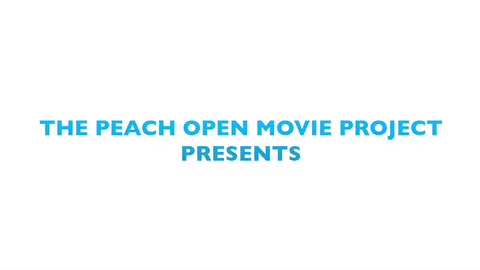

Video
Tu navegador no entiende la etiqueta VIDEO de HTML5. Deberías actualizarlo.
Reproducir/Pausa
Tamaño:
Pequeño
Grande
Normal
Instante de reproducción:
X
Diapositiva relacionada con el punto de reproducción

Volver